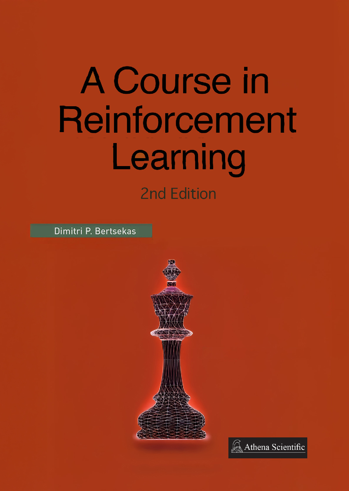

A Course in Reinforcement Learning (2nd Edition) - Dimitri P. Bertsekas
A deep dive into the math and meaning behind RL algorithms

Review
Dimitri P. Bertsekas’ A Course in Reinforcement Learning (2nd Edition) is a deeply insightful and uniquely structured textbook that bridges the gap between classical optimization and the modern field of reinforcement learning (RL). Unlike most RL books that emerge from the machine learning community and focus heavily on empirical performance and implementation, Bertsekas approaches the subject from the lens of dynamic programming (DP), control theory, and operations research, offering a mathematically grounded, algorithmically rigorous, and conceptually unified perspective.
Conceptual focus: value-centric reinforcement learning
The core philosophy of the book revolves around approximation in value space—a concept that plays a foundational role in dynamic programming and is extended here to RL settings. This is in contrast to the increasingly popular policy-gradient methods that dominate deep RL literature. Rather than focusing solely on training end-to-end policies with neural networks, Bertsekas places heavy emphasis on computing or approximating value functions, and using those to derive or improve policies.
This is a natural continuation of the ideas developed in his seminal works on Dynamic Programming and Optimal Control. It also reflects the underlying architecture of high-performing RL systems such as AlphaZero and TD-Gammon, both of which use trained evaluators in conjunction with powerful online search or rollout techniques. In fact, one of the book’s major contributions is to formalize and explain these empirical successes within a Newton-like optimization framework for solving Bellman’s equation.
Structure and content overview
The book is divided into three major chapters, designed to support both linear reading and modular, instructor-tailored course planning:
Chapter 1: exact and approximate dynamic programming
This foundational chapter provides a broad overview of the RL landscape, rooted in dynamic programming. It begins with deterministic and stochastic finite-horizon problems, develops into approximation methods, and presents the conceptual framework of offline training + online play, drawing detailed analogies with AlphaZero and model predictive control (MPC). It also introduces the reader to concepts like rollout, policy iteration, cost-to-go approximations, and terminal cost evaluation. The chapter is comprehensive and forms a standalone platform for readers unfamiliar with RL but versed in optimization.
Chapter 2: approximation in value space – rollout algorithms
Here, Bertsekas deepens the discussion on value function-based methods. He details variants of rollout algorithms—methods that combine a base heuristic with lookahead or simulation to improve decisions in real-time. Topics include constrained optimization, Monte Carlo Tree Search (MCTS), randomized rollout, Bayesian optimization, and their application to deterministic and stochastic control, POMDPs, and even adversarial games. This chapter shows the versatility of the rollout paradigm across discrete and continuous domains.
Chapter 3: learning values and policies
This is where the book engages with neural networks and other parametric function approximators. It examines how value functions and policies can be learned from data using fitted value iteration, Q-learning, SARSA, and policy gradient methods. While coverage of policy optimization is relatively lean compared to deep RL books like Sutton & Barto’s Reinforcement Learning, it is sufficient to understand core ideas and their integration into the Newton-based value approximation framework. The focus remains on conceptual clarity and practical convergence issues.
Each chapter ends with detailed notes, sources, and exercises, often pointing to supplementary material in Bertsekas’ other books, such as Rollout, Policy Iteration, and Distributed Reinforcement Learning (2020) or Lessons from AlphaZero (2022). These references make the book an excellent launchpad for research or deeper specialization.
Highlights and unique strengths
What sets A Course in Reinforcement Learning apart is its rare synthesis of intellectual depth, conceptual clarity, and practical relevance. Bertsekas leverages decades of foundational work in optimization theory and dynamic programming, crafting a perspective on RL that feels both timeless and sharply attuned to contemporary developments like AlphaZero. Rather than presenting RL as a bag of tricks or an empirical race to outperform benchmarks, the book offers a structured, principled framework for thinking about sequential decision-making under uncertainty.
A central strength lies in the elegant articulation of the synergy between offline learning and online planning. Instead of treating training as a static preprocessing step, Bertsekas shows how real-time control and model predictive strategies can interact meaningfully with learned approximations—a conceptual bridge that is both underexplored and urgently needed in modern RL discourse. This also gives the book a unique relevance to high-stakes engineering domains where stability, safety, and interpretability matter.
Another distinguishing trait is the author’s ability to speak fluently across disciplinary boundaries. Readers from control theory, operations research, artificial intelligence, and applied mathematics will all find familiar anchors—but also be challenged to expand their mental models. The book avoids dense formalism without sacrificing rigor, preferring geometric insights, intuitive visualizations, and algorithmic thinking to heavy abstraction. This makes it an accessible yet intellectually satisfying read for those seeking more than surface-level understanding.
Moreover, the text is modular and customizable, making it ideal for various course structures—from short introductory classes to advanced research seminars on RL theory. Each chapter is self-contained yet richly interlinked, allowing instructors or self-learners to navigate the material according to their background and goals.
Enduring relevance in a fast-evolving field
As machine learning matures beyond supervised pattern recognition, the methods described in A Course in Reinforcement Learning are becoming increasingly vital. Bertsekas’ emphasis on approximation in value space, policy iteration, and offline-online synergy aligns directly with the architecture of some of the most successful and well-known AI systems to date—AlphaZero, MuZero, and ChatGPT’s planning-inspired extensions. For example, MuZero (Schrittwieser et al., 2020) generalizes AlphaZero by learning its own model dynamics, yet it retains the value-based planning loop that Bertsekas formalizes through Newton-like updates on Bellman’s equation. Similarly, the resurgence of model-based reinforcement learning (e.g., DreamerV3, EfficientZero) is built on the same principle: learning value estimates offline and refining them online via planning—precisely the synergy this book explores in depth.
In addition, current research on LLMs with planning capabilities (e.g., ReAct, Tree of Thoughts, and OpenAI’s work on tool-use agents) echoes the structure of lookahead planning guided by learned evaluators, another core theme in the book. These methods increasingly blend rollout-based reasoning, value estimation, and policy improvement—even if not framed as reinforcement learning per se. Likewise, in robotics and safety-critical applications, algorithms must generalize reliably, adapt to perturbations, and provide interpretable decision-making—objectives far better served by Bertsekas’ structured, optimization-rooted methods than by end-to-end neural policy training alone.
Thus, what this book presents is not a retrospective—it is a forward-looking foundation. As machine learning turns toward long-horizon reasoning, planning under uncertainty, and adaptive control, the concepts in Bertsekas’ work are proving to be not only relevant, but essential.
Who is this book for?
This textbook is not for everyone—and that’s a strength, not a weakness.
- Ideal readers include:
- Graduate students in electrical engineering, applied mathematics, operations research, or control systems.
- Researchers and professionals interested in optimization, model predictive control, robotics, or multiagent systems.
- Advanced undergraduates with a solid mathematical background and interest in decision-making under uncertainty.
- Practitioners who have experience with algorithms and modeling, and want to understand the “why” behind reinforcement learning, not just the “how”.
- Less ideal for:
- Beginners looking for an introductory, code-heavy book. For this, Reinforcement Learning: An Introduction by Sutton & Barto or Deep Reinforcement Learning Hands-On by Maxim Lapan may be more approachable.
- Readers wanting a focus on PyTorch/TensorFlow, environment setups, or software engineering best practices for RL pipelines.
Instead, Bertsekas offers something increasingly rare: a textbook that doesn’t treat reinforcement learning as a subfield of deep learning, but rather as a mathematically grounded discipline that can integrate with—but also stand apart from—modern AI trends.
Supplementary materials
The book is accompanied by video lectures, slides, and supplemental content from Bertsekas’ Arizona State University course, accessible via his website. This makes the book particularly useful for self-study, especially for learners who appreciate visual explanation and conceptual repetition across formats.
Verdict
A Course in Reinforcement Learning (2nd Edition) is a rigorous, insightful, and conceptually rich text that helps readers understand reinforcement learning as a structured decision-making framework, not just a toolbox of tricks. If you’re serious about applying RL to real-world, high-stakes systems—where stability, interpretability, and theoretical guarantees matter—this is the book you’ve been looking for.
It challenges, rewards, and broadens the reader’s view of what reinforcement learning is and what it can be. Highly recommended for those looking to build durable understanding, not just quick implementations.
Further readings
Bertsekas, D. P. (2022). Lessons from AlphaZero for Optimal, Model Predictive, and Adaptive Control. Athena Scientific. Download from author website
Bertsekas, D. P. (2020). Rollout, Policy Iteration, and Distributed Reinforcement Learning. Athena Scientific. More information
Schrittwieser, J., Antonoglou, I., Hubert, T., Simonyan, K., Sifre, L., Schmitt, S., … & Silver, D. (2020). Mastering Atari, Go, Chess and Shogi by planning with a learned model. Nature, 588(7839), 604–609. Read the paper
Hafner, D., Lillicrap, T., Norouzi, M., & Ba, J. (2023). Mastering diverse domains through world models. arXiv preprint arXiv:2301.04104. Read the paper
Ye, J., Lin, G., Xu, H., Liao, R., Yang, E., Lu, H., … & Liu, S. (2021). Mastering Atari Games with Limited Data. Advances in Neural Information Processing Systems, 34. Read the paper
Yao, S., Zhao, J., Yu, D., Narasimhan, K., & Zhang, Y. (2023). Tree of Thoughts: Deliberate Problem Solving with Large Language Models. arXiv preprint arXiv:2305.10601. Read the paper
Yao, S., Zhao, J., Yu, D., Kasai, J., Wong, A., & Zhang, Y. (2022). ReAct: Synergizing Reasoning and Acting in Language Models. arXiv preprint arXiv:2210.03629. Read the paper
Aghzal, M., Plaku, E., Stein, G. J., & Yao, Z. (2025). A Survey on Large Language Models for Automated Planning. arXiv preprint arXiv:2502.12435. Read the paper
Tantakoun, M., Zhu, X., & Muise, C. (2025). LLMs as Planning Modelers: A Survey for Leveraging Large Language Models to Construct Automated Planning Models. arXiv preprint arXiv:2503.18971. Read the paper
Li, H., Chen, Z., Zhang, J., & Liu, F. (2024). LASP: Surveying the State-of-the-Art in Large Language Model-Assisted AI Planning. arXiv preprint arXiv:2409.01806. Read the paper
Changle, Q., et al. (2024). Tool Learning with Large Language Models: A Survey. Frontiers of Computer Science. Read the paper
Info
| Subject | Content |
|---|---|
| Title | A Course in Reinforcement Learning |
| Year | 2025 (2nd edition) |
| Authors | Dimitri P. Bertsekas |
| Publisher | Athena Scientific |
| Language | English |
| Topics | Reinforcement learning, Model predictive control, Dynamics programming, Machine learning |
| Downloads | Book PDF |
| Other links | Course videolectures and materials |
| ISBN/DOI | 1-886529-29-9 |
| Buy online |
Social media